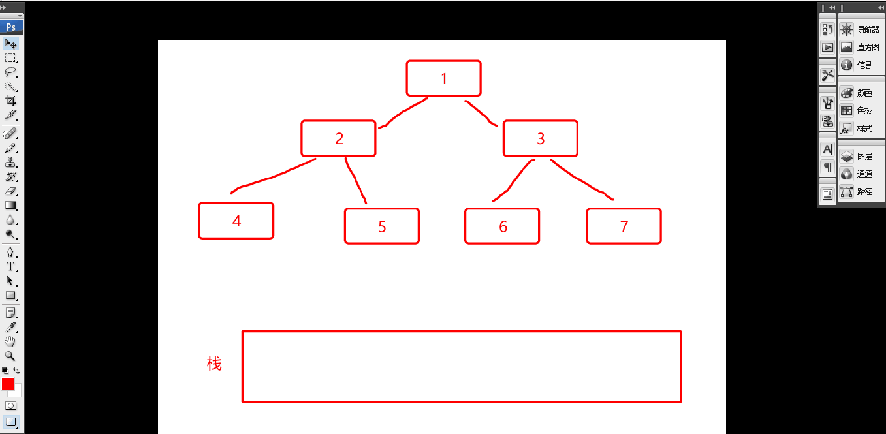

常用算法及思路
算法
扁平数据结构转树形数据结构
1 | allRes: [ |
1 | //方法一 找对应值 |
1 | //通过映射关系 此方法需要ID有序排列 |
1 | //数据 |
1 | //生成建立map映射 然后 开始遍历 |
二叉查找
1 | 1.我们已知父亲的ID 和自己的值 去找自己是谁的孩子 |

1 | //首先我们要有第一层的列表数据 这里我们第一层的列表数据 就是我们级联动组件 |
1 | 1.结合上面的代码和动图 这里我们简单分析一下 首先我们有ID 然后我们新建一个栈队列 和 索引 |
公告
感谢访问本站，如喜欢请收藏。本站主要分享前端知识，立志成为资深前端工程师，但目前是一个前端界的小学生 若喜欢可以打赏请博主喝一杯冰阔落
另外请大家多多支持淼哥的开源项目
https://github.com/flipped-aurora/gin-vue-admin
🌟🌟欢迎大家start 🌟🌟
欢迎加入博主的前端技术交流群